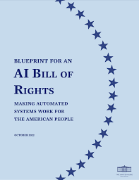

EDUCATIONAL WEBSITE ON AI BILL OF RIGHTS
How can I make learning about the AI Bill Of Rights inclusive, accessible, and engaging, and how can I use my knowledge on web development such as inclusive design, and accessible features to create an interactive learning experience?

INTRODUCTION
Learning about AI Policy and Software Development
Throughout my internship/research experience at the MIT Media Lab, I was interested in exploring the intersection of social justice and technology. Some research questions that led to the creation of the AI Bill of Rights website were: how can we make learning about the AI Bill Of Rights inclusive, accessible, and engaging, and how can I use my knowledge on web development such as inclusive design, and accessible features to create an interactive learning experience? Overall, being the first real project I worked on outside of the classroom, this experience was invaluable in helping me apply my skills in a practical setting and develop a deeper understanding of web development and design principles.
PROJECT GOALS
Understanding Project Goals
- Create an interactive website for students in middle/high school
- Create a back end feature that tracks users (students) roadmap through the interactive lesson plans
- Spend time efficiently designing website wireframes to carefully assess functionalities needed through the creation of low and high-fidelity wireframes
DESIGN PROCESS AND INSPIRATION
Learning and gathering inspiration from different learning platforms


WIREFRAMES
Designing low-fidelity wireframes


PROTOTYPING AND IMPLEMENTATION
Designing high-fidelity prototype and back


Value and Impact
The AI Bill of Rights website was created to provide a space for students to learn about the importance of AI ethics and how it impacts their daily lives. It was designed to be interactive and engaging, with the goal of making learning about AI ethics fun and accessible. It includes a back-end feature that would ideally track students' progress through the lesson plans, allowing teachers to monitor their students' learning and provide feedback. The website serves as an added functionality to the Day AI curriculum, and serves as a positive impact on students' understanding of AI ethics, and raise awareness of the importance of AI Bill of Rights.
Key Learnings
- Deepened understanding of HTML/CSS for layout and styling
- Gained insights into UX design and accessibility
- Improved skills in Firebase and project management
- Learned to balance tasks, meet deadlines, and iterate on design